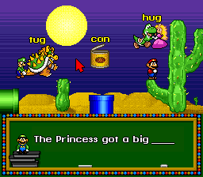
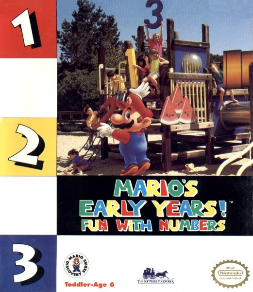
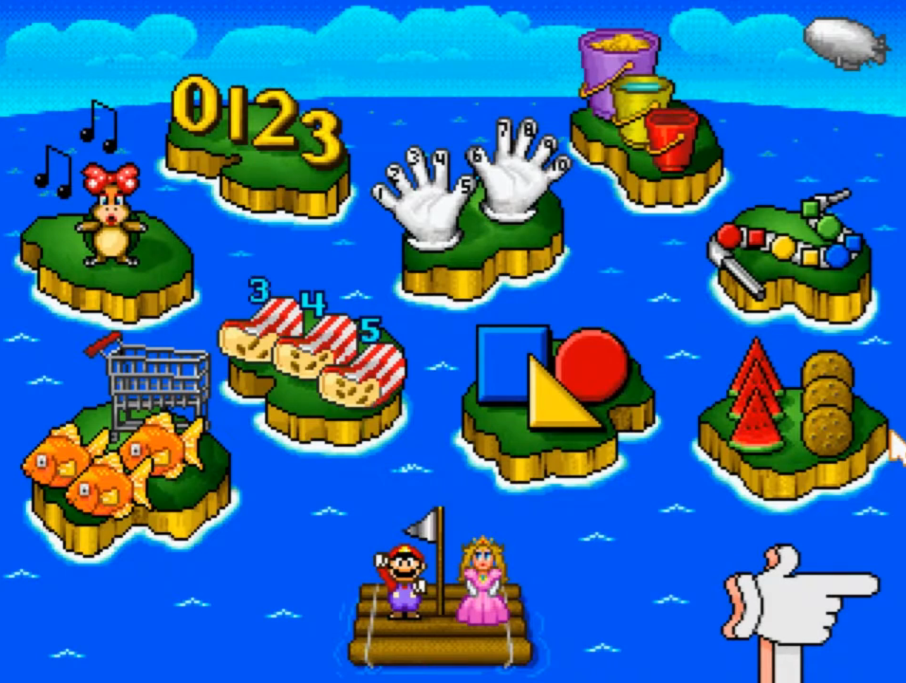
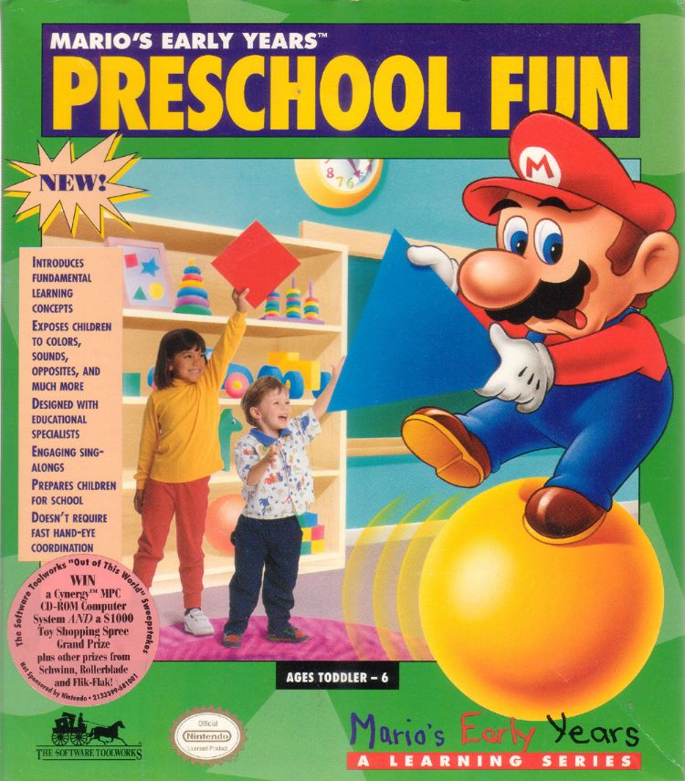
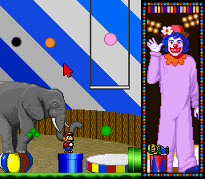
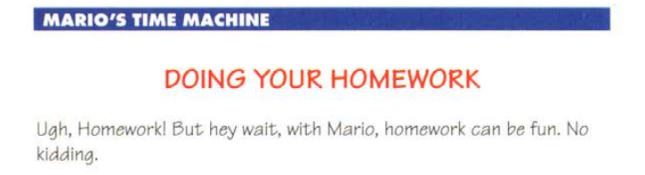

While some of the games listed below may be familiar to Mario fans, they might not know that they were collectively part of a "Mario Discovery" series. As the title suggests, these are educational games, sorta riding the wave that was popular in the 90s. At no real surprise, they are developed by another company, 'The Software Toolworks' and only licensed by Nintendo. Read on as we delve into some truly odd games!
(Note: Mario Teaches Typing 1,2 and Mario's FUNdamentals are NOT part of this series.)
Mario's a great sport. Kidnapped and still happy his brother's getting a game.
The infamous 1993 game where Luigi takes center stage on the NES, SNES, PC, and later Mac, taking place in the real world to educate you about 'real' facts. Bowser's gonna flood our planet and it somehow gets more deranged! He's sending his minions all over the world via PORTALS to steal landmarks, improvable as that might be, to sell for cash. Art theft is a thing, but all he wants is to afford hairdryers, so why not steal those directly? Per the SNES manual his castle is in Antarctica, so why is he melting his own turf? By the way, how do you power so many hairdryers in Antarctica?

Left: Well when you zoom out like that I guess it's a small world after all..
Details vary between versions, though the end result will be Mario's capture, leaving it to Luigi to save the day. Interesting notes is that Brooklyn is mentioned in the because, well, that was the canon with no question then, but they beat Luigi's Mansion, so let's give some credit where it's due. There's no reason why they had to conjure up a Luigi solo mission plot, but they thought it was a good enough hook and it kinda is. Does that apply to game play?
This is a ‘side-walk-scroller’, get it? You traverse the streets and look both ways before crossing (to set a good example for the kids), all on the hunt for Koopa Troopas with stolen artifacts and clues, maybe, on where they belong. That's the "educational" bit, knowing where the artifacts belong. There are curators hanging around to quiz you on if you know what you are doing, and if so accept the items. Luigi uses a 'Globulator' to call Yoshi once he knows where he is and to get out of the level, or the exit will be blocked.
Indeed, it's a mystery where the heck you are in the world and you can't directly ask someone like any tourist would normally. Once you have sleuthed it up you secure the cities, escape with the help of Yoshi, and move on through Bowser's castle, occasionally fighting Koopalings that may or may not have voice actors depending on version. There is a password system to save some progress.
While that gets a bit old, they were trying to make it work. I find this game a quirky novelty that any fan should check out at least once. Below are some additional takes of mine:
Manual here (SNES)

Out of this world!
I view this as the sister game of the above, their last effort to kinda pretend to be creating a game an average child might want to play. Does it work better this go around? Well for starts, they did not xerox the same game over various ports, we get a semi-tailored experience!
DOS and SNES version: (Manual here) Bowser is stealing valuable items again, only now he's messing with history via a ‘Timulator’. Bowser wants it partly for a fancy personal museum in his castle, but also screw with time itself. Mario has to get in the castle to return the items to their proper place. Notably Mario has narration and the music isn’t half bad. Buuuuut..

Okay, great. How do we save the world this time? For starts, there's no side walking. You go to the museum there Bowser has already successfully taken items. You pick one, a location that it goes to, and a time that it belongs to. I feel this is asking quite a lot if you are just jumping in.. Or I'm bad at history. You are next sent to a 3D surfing mini-game called the 'Fabric of Time' where you need to pick up mushrooms and then hit a whirlpool. NOW you are in whatever historical place you need to be.
Like in Mario is Missing you must be quizzed successfully before you can return items. Walk around and be a lookie loo again, just in various historic settings. There's a huge mecha of Mario’s hand, but it only takes you back home? Lame. The DOS game has multiple endings depending on how fast you complete your task and if you returned the items correctly. Bowser might get away or get squashed by a dinosaur Jurassic Park style for instance. The SNES port notably has has less locations to worry about. Password save returns.
NES: (Manual here) The game is redesigned for the hardware. Mario and Yoshi stumble upon the Bowser Museum this time. Yoshi decides to waltz inside and gets kidnapped, a plot point nonexistent in the other versions. A couple of things are simplified. To time travel you play a brief Mario Bros inspired game to get an item then jump into a pipe. Certainly feels a bit more like ‘Mario’ doesn’t it? The time periods are already predetermined so you don't enter them manually. You don’t have to do the npc detective work either to return stuff, rather read message blocks that describe the location. You will of course have to guess correctly where you are still. At the cost of potentially educational busy work, I actually like this a bit better. The visuals are alright for the system it’s on, but once again combat is prohibited as the enemies can’t hurt you.
Left: I mean, it's a step up from the hairdryers.
Overall another quirky work. The wacky time travel is a simple but workable excuse to jump you wherever and teach kids stuff. The different ports doing something to more accommodate the system is also a point of interest. We can't get away from the flaw however of taking the Mario out of Mario though, so beyond the novelty you probably won't linger too long.
 |
Mario's Early Years! Fun with Letters is purely for very small kids as indicated in the title. Both MS-DOS and SNES versions teach basic English and are controlled by clicking around a cursor. Mario and Peach and Yoshi are playable characters, but you don’t really ‘play them’ because again you’re mostly clicking around to pick the right answers. The graphics are off model, but there's lots often entertaining voice acting. It’s worth a Youtube watch for sure. |

If Luigi is brave enough to answer that, let's let him. Also, was SM64 taking notes from this? |
|---|---|---|
|  | For MS-DOS and SNES this game focuses on numbers but also comparisons and geometry. Again we have the same type of voice acting and point and click gameplay. The locations feel a little more Mario with some Super Mario World backdrops depending on minigame but overall are similar to the above. The SNES version lacks the Sing Song World but this is a favor trust me! Again, check it out on Youtube and that’s it. |

Peach: Mario? Did.. you really have to pick the version that has this creepy Wendy Koopa thing to the left? |
|---|
**Long live that meme forever!
|  | On MS-DOS and SNES, the series ends with... a bang cause we're gonna teach ya everything now! This is a sort of free for all game for small kids. You count objects, identify body parts (...some of them), find opposites, match sounds to animals, match whatever to whatever- You get it. The island looks remarkably like the one in the previous game, so much so that if I showed it you might have thought I posted the same thing twice. The Sing Song World is again left out of the SNES version. Aesthetics are entirely the same deal if not more off model because some 'familiar' faces show up this time. In Counting World Peach is your teacher, so hopefully you answered that other question correctly, lest you have a frying pan sized bruise on your noggin... I'm kidding, but if I wasn't this might be worth more than a Youtube peruse at best. | 
Wow, even predicted that we'd be living in Clown World.. |
|---|
|  | -Somewhat. Off model and juxtaposed is the name of the game here, real world elements with a surface level (especially later) Mario skin, while hardly if ever incorporating any of the things he's is known for. I judge and evaluate Mario is Missing and Mario's Time Machine as 'game games' while the others are strictly in the pre-K market, and about typical for that sort of specialized genre. Mario is Missing is a novelty first and far most, something to have fun and laugh at or with for a while. Mario's Time Machine is trying to be a bit zanier and I do like that, but it overall comes off duller for me. I suspect that the Mario elements are even less integral to the adventure. You can squint at Mario is Missing and kinda see a Mario game, but less as much here. The interactions with the notebook instead of curators hurts it too. That being said, for a Mario fanatic, you're obligated to check everything out at least once. Come on! They won't bite! |

..Mostly. I don't like the looks of them! |
|---|
*Updated 6/6/25*